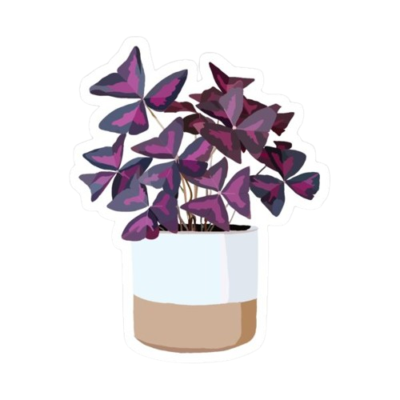

Know about me

Botanical Characteristics:
- Also known as Purple Shamrock, it's a perennial plant native to South America.
- It has triangular, deep purple leaves that close at night and open during the day (nyctinasty).
- The plant produces delicate pink or white flowers, adding to its ornamental appeal.
Varieties:
- Oxalis triangularis 'Purple': Known for its solid deep purple leaves.
- Oxalis triangularis 'Silver': Features leaves with silvery markings.
- Oxalis triangularis 'Green': A less common variety with green foliage.
Benefits:
- Acts as a decorative houseplant, enhancing interior aesthetics.
- Its rhizomes are non-toxic in small amounts and used in traditional medicine in some cultures.
- Can help improve indoor air quality by filtering pollutants.
Care Instructions:
- Prefers bright, indirect light but can tolerate partial shade.
- Needs well-drained soil and moderate watering; let soil dry slightly between waterings.
- Goes through a dormant phase—leaves may die back but will regrow with proper care.
- Grows well in containers, making it ideal for indoor settings.